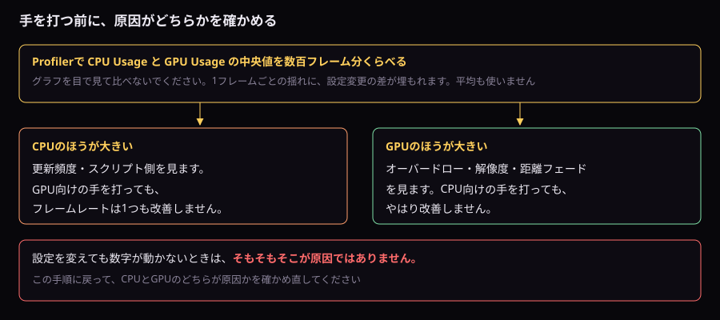

動作が重い場合
原因がCPUかGPUかを確かめてから手を打ちます。確かめずに設定を変えても、たいてい何も変わりません。
最初に：CPUとGPUのどちらが原因かを確かめる
これを飛ばさないでください。 CPUが原因のときにGPU向けの手を打っても、フレームレートは1つも改善しません。逆も同じです。
- Unityの
Window > Analysis > Profilerを開きます - Play Modeに入り、重いと感じる場所で静止します
CPU UsageとGPU Usageの両方を見ます

| 状態 | 原因 | 読むところ |
|---|---|---|
| CPU時間 > GPU時間 | CPU律速 | 下の「CPUが原因のとき」 |
| GPU時間 > CPU時間 | GPU律速 | 下の「GPUが原因のとき」 |
| どちらも予算内なのに重い | このアセット以外が原因の可能性 | アバター数、他のShader、ミラーなど |
60fpsなら1フレームの予算は約16.7ms、90fpsなら約11msです。GPU時間が2〜3msしかないなら、このアセットの描画は原因ではありません。 そこを削っても数字は動きません。
GPUが原因のとき
1. 距離フェードを有効にして、終了距離を詰める（効果が大きい）
距離フェードは軽量化のスイッチです。 終了距離より遠い面では、光点の形・色・点滅の計算そのものを行いません。
| 設定 | 結果 |
|---|---|
距離フェードを使用 ON、終了距離が短い | 遠い面の計算がまるごと省かれます |
距離フェードを使用 OFF | 省略は起きません。 どの面も「消える」と判定されないためです |
広いワールドほど効きます。まず終了距離を実際に光を届かせたい範囲まで詰めてください。
透過マスクの回転追従（初期値ON）で光点の形をそのまま透明度に使うため、形の計算を省けません。2. 電源をOFFにしているときの負荷も下がっています
電源OFFの間も同じ仕組みで計算を省きます。演出を使わない時間が長いワールドでは、電源を切っておく価値があります。
3. 半透明版の重なりを減らす
半透明は重なった枚数だけ描画されます（オーバードロー）。同じ画素を何枚も塗ると、そのぶん素直に重くなります。
- 半透明の面を何枚も重ねて配置しない
- カメラが至近距離まで寄れる場所に大きな半透明面を置かない
- 不透明で済むところは不透明版のShaderを使う。 省略が効きやすく、重なりの問題もありません
4. 画面に占める面積を小さくする
Shaderの負荷は塗る画素の数に比例します。巨大な面を画面いっぱいに映す構図は、それだけで重くなります。壁を分割して遠い部分には別のMaterialを割り当てる、といった対処が有効です。
5. 影響するピクセルライトの数を減らす
1つの面に当たるリアルタイムライトが増えると、そのぶん描画が追加で走ります。Project Settings > Quality > Pixel Light Count と、各ライトの Range・Render Mode を見直してください。
6. テクスチャの設定を見直す
光点形状・アトラス・Cookie・各種Maskに必要以上に大きなテクスチャを使っていないか確認してください。圧縮形式（BC系）とMipmapが有効かどうかも効きます。
CPUが原因のとき
1. 更新頻度と対象Material数の積を見る
負荷は マテリアル更新頻度 そのものではなく、対象Material数との積で決まります。1枚なら90回でも軽く、20枚なら30回でも重くなります。
| 方針 | 更新頻度の目安 |
|---|---|
| 滑らかさ優先 | 45〜60 |
| 標準 | 30（初期値） |
| 負荷優先 | 15〜20 |
2. Shader Global共有を使う
Shader Global共有を使用 をONにすると、動的な値をMaterialごとではなくScene共通値として一括送信します。対象Materialが多いほど効きます。
Tools > MirrorBall Light > 診断・最適化 がこれをエラーとして知らせます。3. GPUで回転させる
投影回転をGPUで計算 がONなら、連続回転はGPU時刻から生成され、Transformの回転値を毎フレーム送る必要がなくなります。表示用ミラーボール本体も回転 をOFFにすると、球体のTransform更新も止まります。
4. プリセットの差分更新
ライブプリセットは プリセット差分更新の最小値 未満の微小な補間更新を省きます。初期値は0.001です。
オブジェクトが多いとき
壁・床・柱など、反射を受ける面をたくさん置いた場合の話です。CPUとGPUで事情が違います。
1. 毎フレームのCPUは、オブジェクトの数では増えません
Shader Global共有を使用 がON（初期値）なら、毎フレームの送信はScene共通値を1回書くだけです。面が1枚でも100枚でも、毎フレームのCPUコストは変わりません。
対象Materialを1本ずつ回す処理は、プリセットを切り替えたときや設定を変えたときだけ走ります。毎フレームではありません。
Shader Global共有を使用 をOFFにすると、毎フレームMaterialごとに20回前後の値送信を行います。この場合だけ、対象Material数にそのまま比例して重くなります。面を多く置くなら、ONのまま使ってください。2. 見た目が同じ面は、Materialを1つにまとめる
Shader Global共有がONのとき、光点の位置・色・明るさといった動く値はすべてScene共通値から来ます。 つまり面ごとにMaterialを分ける必要がありません。
| 分ける必要があるか | 例 |
|---|---|
| 不要（1つにまとめられます） | 同じ壁材が続く、同じ床が広がっている |
| 必要 | 面ごとに基本テクスチャ・基本色・ノーマルマップ・タイリングを変えたい |
まとめると、Controllerの対象Materialのリストも短くなり、設定変更時の処理が軽くなります。Unityがまとめて描きやすくなるという効果もあります。
3. 動かない面には Batching Static を付ける
面の数が増えると、描画命令（ドローコール）の数が効いてきます。壁や床のように動かないオブジェクトは、Inspector右上の Static から Batching Static を有効にしてください。同じMaterialのものがまとめて描かれます。
Shaderの設定では減りません。 ドローコールはUnity側のまとめ方で決まるためです。上の「Materialを1つにまとめる」と組み合わせると効果が出ます。
4. 面の数より、塗る画素の数を見てください
GPU側は面の枚数ではなく、画面に塗られる画素の数で決まります。小さな面を100枚置いても、画面の隅にしか映らないなら負荷はわずかです。逆に大きな面が1枚でも画面いっぱいなら重くなります。
したがって、面が多いときの手当ても上の「GPUが原因のとき」と同じです。距離フェードの終了距離を詰めるのが最も効きます。
推奨負荷設定
実際に重いときの手順は 動作が重い場合のTips にまとめています。原因がCPUかGPUかを確かめてから設定を変えてください。
| 対象 | 推奨開始値 | 理由 |
|---|---|---|
| Controller | Global共有 ON、GPU投影回転 ON | Material数に依存するCPU更新を削減します。 |
| 更新頻度 | 30回／秒 | 見た目と負荷のバランス。静かな演出は15–20でも可。 |
| Realtime Light | 1灯、影なし、Range最小 | アバター実光の負荷を制限します。 |
| Sceneプレビュー | 16本 | Editor専用ですが、複雑なScene操作時はOFFも可。 |
| Surface Facing | 必要時のみON | 追加計算を避けます。 |
| Shaderバリアント | 使わないAudioLink／Cookie／Atlas／連携をOFF | 使用Keywordとビルド対象を限定します。 |
知っておくと判断が早くなること
設定を変えても数字が動かないとき
そもそもGPU律速になっていない可能性が高いです。「最初に」の手順に戻って、CPUとGPUのどちらが原因かを確かめ直してください。
使っていない機能は既に省かれています
Cookie・形状アトラス・ランダム点滅・各種Maskは、OFFのときShaderの内部で分岐して読み飛ばしています。使っていない機能をOFFにして回るより、上の1〜5を先に見てください。
Import時間と実行時の重さは別のものです
導入時のImportが長いことと、ワールドが実行時に重いことは無関係です。Importについては最適化・対処を参照してください。